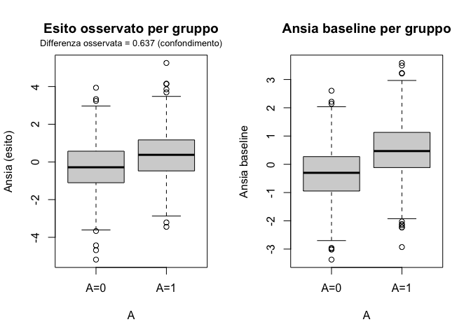
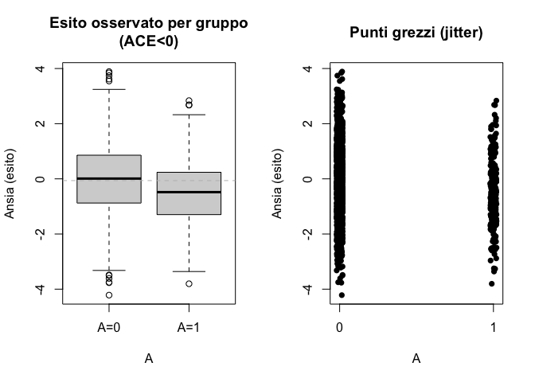
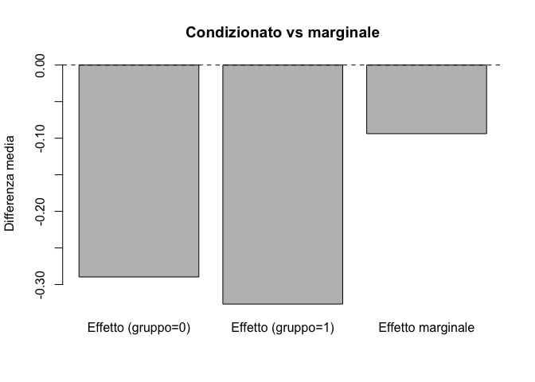

22Causalità: intuizioni, controfattuali e perché l’associazione non basta
Introduzione
Questo capitolo introduce il concetto di causalità in termini controfattuali (what-if), fungendo da introduzione al Capitolo 23 che presenterà gli strumenti operativi (DAG, backdoor, propensity score, matching, pesatura e regressione). Basato sul primo capitolo di Hernan & Robins (2023), il testo sviluppa l’intuizione fondamentale e fissa la notazione minima necessaria.
ConsiglioTake‑home (in 3 righe)
Effetto causale medio (ACE) = differenza tra due mondi: se tutti ricevessero il trattamento vs se nessuno lo ricevesse.
Associazione = differenza tra trattati e non trattati nel mondo osservato: può essere fuorviante per via del confondimento.
La randomizzazione rende i gruppi comparabili “in media” → associazione ≈ causalità (se SUTVA regge).
22.1 Fondamenti dell’inferenza causale: controfattuali, effetto medio e SUTVA
Tutti noi, senza rendercene conto, facciamo continuamente inferenze causali nella vita di tutti i giorni. Immaginiamo uno studente che si chiede: “Se ripeto mentalmente quell’argomento prima dell’esame, riuscirò a sentirmi meno ansioso?”. In questa domanda è già presente l’ossatura del ragionamento causale: c’è un’azione possibile — il ripasso mentale, che chiameremo trattamento — e c’è un esito atteso, la riduzione dell’ansia.
La statistica formale traduce questa intuizione quotidiana in un linguaggio più preciso, introducendo il concetto di controfattuale. Ogni individuo, di fronte a un possibile trattamento, può essere pensato come portatore di due scenari alternativi. Nel primo scenario lo studente riceve il trattamento (per esempio, applica la tecnica di reappraisal), e in questo caso possiamo indicare l’esito con la notazione \(Y^{(1)}\). Nel secondo scenario lo stesso studente non riceve il trattamento (non applica la tecnica), e l’esito corrispondente lo indichiamo con \(Y^{(0)}\).
Naturalmente, nella realtà osserviamo soltanto uno di questi due scenari: se lo studente decide di fare il reappraisal, conosceremo il valore di \(Y^{(1)}\), mentre l’altro resterà invisibile, “contro-fattuale”, cioè non realizzato. La relazione tra ciò che osserviamo e ciò che ipotizziamo è riassunta dal principio di consistenza: se il trattamento ricevuto è \(A=a\), allora l’esito osservato coincide con il controfattuale corrispondente, \(Y = Y^{(a)}\).
Da questo modo di pensare discende la definizione di effetto causale. A livello individuale, l’effetto è la differenza tra i due esiti potenziali: \(Y^{(1)} - Y^{(0)}\). Ma siccome per ciascun individuo osserviamo sempre e soltanto uno dei due valori, l’effetto individuale rimane per lo più inaccessibile. È invece possibile spostarsi a un livello più aggregato, e chiedersi quale sia la differenza media che si osserverebbe in una popolazione intera se tutti ricevessero il trattamento rispetto a se nessuno lo ricevesse. Questa differenza media prende il nome di effetto causale medio (Average Causal Effect, ACE), ed è definita come
In altre parole, ci chiediamo: “In media, quale sarebbe la differenza tra il mondo in cui tutti applicano il reappraisal e quello in cui nessuno lo fa?”.
Perché questa definizione funzioni, è necessario assumere alcune condizioni. La più importante è nota come SUTVA (Stable Unit Treatment Value Assumption). Nonostante il nome possa sembrare tecnico e astratto, l’idea è semplice. Da un lato, dobbiamo supporre che il trattamento ricevuto da una persona non influenzi direttamente l’esito di un’altra: se Tizio fa reappraisal, questo non dovrebbe modificare il livello di ansia di Caio. È l’ipotesi di assenza di interferenza, che in molti contesti psicologici individuali è plausibile, ma non sempre: pensiamo, per esempio, a terapie di gruppo o a dinamiche di classe. Dall’altro lato, occorre assumere che esista un’unica versione ben definita del trattamento. Dire che uno studente ha fatto reappraisal deve significare che ha seguito una procedura precisa e uguale per tutti; se ci fossero più modalità molto diverse tra loro di “fare reappraisal”, dovremmo distinguerle o modellarle separatamente.
Con queste idee di base — controfattuali, consistenza, effetto medio e SUTVA — abbiamo il necessario per cominciare a parlare in modo più rigoroso di causalità, pur restando ancorati alle intuizioni di senso comune.
22.2 Causale vs associativo: perché differiscono?
Quando parliamo di effetto causale, ci riferiamo a un confronto ipotetico tra due mondi alternativi. Nel primo mondo immaginiamo che tutti ricevano il trattamento, nel secondo che nessuno lo riceva. La domanda è: quanto cambia, in media, l’esito se passiamo da un mondo all’altro? Questa è l’idea di effetto causale medio (ACE), espresso come la differenza tra \(\mathbb{E}[Y^{(1)}]\) e \(\mathbb{E}[Y^{(0)}]\).
Il ragionamento associativo, invece, è più vicino a ciò che possiamo osservare direttamente nei dati. Non confronta due mondi ipotetici, ma due gruppi reali: coloro che hanno effettivamente ricevuto il trattamento e coloro che non lo hanno ricevuto. In questo caso guardiamo a \(\mathbb{E}[Y \,|\, A=1]\) e lo confrontiamo con \(\mathbb{E}[Y \,|\, A=0]\).
La differenza fra i due approcci è sottile ma fondamentale. Nel confronto causale stiamo immaginando che la stessa popolazione viva due scenari diversi, uno con trattamento e uno senza. Nel confronto associativo, invece, confrontiamo due sottogruppi che potrebbero avere caratteristiche molto diverse già all’inizio. Per esempio, se a ricevere il trattamento sono soprattutto gli individui più ansiosi, allora la differenza osservata tra trattati e non trattati non rifletterà solo l’effetto del trattamento, ma anche il fatto che i due gruppi non partivano dalle stesse condizioni.
Questa discrepanza prende il nome di confondimento: si verifica quando esistono variabili che influenzano sia la probabilità di ricevere il trattamento sia l’esito. In presenza di confondimento, l’associazione osservata può dare un’impressione ingannevole, facendo sembrare che il trattamento abbia un effetto quando in realtà non ce l’ha, o nascondendo un effetto reale dietro differenze preesistenti tra i gruppi.
Per questo motivo è importante distinguere chiaramente tra ciò che possiamo stimare direttamente dai dati — l’associazione — e ciò che vorremmo davvero conoscere — l’effetto causale. È proprio lo scarto tra queste due prospettive a rendere necessarie le strategie che vedremo più avanti, dal disegno sperimentale ai metodi statistici per i dati osservazionali.
22.3 Quale misura di effetto? Additiva o moltiplicativa
Una volta chiarito che cosa intendiamo per effetto causale medio, rimane da decidere come descriverlo. Non esiste un’unica misura: la scelta dipende dalla domanda che vogliamo porci e dal modo in cui vogliamo comunicare i risultati.
Se pensiamo a un esito dicotomico, come ad esempio “ha avuto un attacco di panico” sì o no, possiamo calcolare la differenza di rischi. In pratica confrontiamo la probabilità dell’evento se tutti ricevessero il trattamento con la probabilità se nessuno lo ricevesse. Questo ci dice quanti casi in più o in meno ci aspettiamo per effetto dell’intervento. È una misura additiva: sottrae un rischio dall’altro.
Un altro modo di guardare allo stesso fenomeno è chiedersi quante volte cambia il rischio con il trattamento. In questo caso si parla di rapporto di rischi (risk ratio) o, più tecnicamente, di odds ratio, che confronta le probabilità relative. Queste misure hanno il vantaggio di essere intuitive quando vogliamo comunicare un “moltiplicatore del rischio”: per esempio, “chi non ha fatto reappraisal ha il doppio della probabilità di avere un attacco di panico”.
Se invece l’esito non è dicotomico, ma continuo — come un punteggio di ansia su una scala — ha più senso restare sulla scala delle medie e confrontare direttamente la differenza tra i due scenari.
In sintesi, il punto non è tanto quale misura sia “migliore”, quanto quale sia più adatta alla domanda che stiamo cercando di rispondere. Se ci interessa la portata assoluta di un intervento, per esempio per pianificare risorse o valutare l’impatto concreto in termini di casi prevenuti, la differenza di rischi è la più parlante. Se invece vogliamo enfatizzare l’aumento o la riduzione proporzionale del rischio, ha senso scegliere il rapporto di rischi. L’importante è evitare automatismi: ogni misura racconta la stessa storia su scale diverse, e sta a noi decidere quale scala risponde meglio alla domanda di ricerca.
22.3.1 Due fonti di variabilità
Quando proviamo a stimare un effetto causale, dobbiamo anche riconoscere che i numeri che otteniamo non sono mai esatti. C’è sempre variabilità, e questa può avere almeno due origini.
La prima è legata al campionamento. Nella pratica non possiamo osservare un’intera popolazione, ma soltanto un campione. Se ripetessimo lo studio più volte, selezionando gruppi diversi di persone, otterremmo inevitabilmente risultati leggermente diversi. È la normale oscillazione dovuta al fatto che ogni campione è solo una “fotografia” parziale del fenomeno.
La seconda fonte di variabilità riguarda il fatto che anche fissando il trattamento, gli esiti non sono identici per tutti. Le persone differiscono tra loro, e i contesti in cui vivono introducono ulteriore eterogeneità. Così, anche quando due individui ricevono lo stesso intervento, le loro risposte possono essere molto diverse: un po’ per caratteristiche individuali, un po’ per fattori casuali.
Nel nostro corso, per tenere conto di queste fonti di incertezza, useremo gli strumenti della statistica bayesiana. In particolare ci affideremo agli intervalli di credibilità, che permettono di rappresentare in modo chiaro e intuitivo quanto possiamo essere fiduciosi nelle nostre stime.
22.4 Mini-simulazioni: confondimento e randomizzazione
Per fissare meglio le idee, può essere utile vedere in azione con una simulazione cosa succede quando c’è confondimento e cosa accade invece quando il trattamento è assegnato in modo casuale. Le simulazioni che seguono sono semplici; l’obiettivo non è ottenere risultati realistici, ma rendere visibile la logica dei concetti.
22.4.1 Il caso del confondimento: quando i trattati sono già diversi all’inizio
Immaginiamo una situazione in cui il trattamento — per esempio, l’uso di una strategia di reappraisal per ridurre l’ansia — viene scelto soprattutto da chi è già più ansioso per natura. Qui stiamo assumendo che il trattamento, di per sé, non abbia alcun effetto causale sull’esito; tuttavia, proprio perché chi ha ansia elevata tende a trattarsi di più, il confronto tra trattati e non trattati sarà inevitabilmente distorto. Vedremo infatti emergere una differenza nei livelli di ansia osservata, ma questa differenza non sarà dovuta al trattamento: sarà il riflesso del confondimento.
Il codice seguente genera questo scenario. Prima creiamo una variabile che rappresenta l’ansia di tratto a baseline. Poi costruiamo una probabilità di ricevere il trattamento che aumenta al crescere di questa ansia di partenza. Infine simuliamo l’esito, che dipende solo dall’ansia di tratto e dal caso, ma non dal trattamento.
set.seed(42)N<-2000# Ansia di tratto a baselineanx0<-rnorm(N, mean =0, sd =1)# Probabilità di ricevere il trattamento aumenta con l'ansia baselinelogit<-function(x)1/(1+exp(-x))pr_treat<-logit(-0.5+1.0*anx0)A<-rbinom(N, size =1, prob =pr_treat)# Esito: dipende dall'ansia baseline ma non dal trattamentoY<-0.8*anx0+rnorm(N, 0, 1)# Differenza media osservata tra trattati e non trattatiassoc_diff<-mean(Y[A==1])-mean(Y[A==0])# Visualizzazionepar(mfrow =c(1,2))boxplot(Y~A, names =c("A=0","A=1"), main ="Esito osservato per gruppo", ylab ="Ansia (esito)")mtext(sprintf("Differenza osservata = %.3f (confondimento)", assoc_diff), side=3, line=0.5, cex=0.8)boxplot(anx0~A, names =c("A=0","A=1"), main ="Ansia baseline per gruppo", ylab ="Ansia baseline")

Confondimento: il gruppo trattato appare peggiore anche senza effetto causale.
I grafici parlano chiaro. Nel primo vediamo che il gruppo trattato presenta in media livelli di ansia più alti nell’esito, come se il trattamento avesse avuto un effetto negativo. Ma sappiamo che in questa simulazione il trattamento non aveva alcun effetto causale. Nel secondo grafico compare la ragione di questa apparente differenza: i trattati avevano già, a baseline, un’ansia più alta.
Questa simulazione mostra in modo diretto che l’associazione osservata fra trattamento ed esito non coincide necessariamente con l’effetto causale del trattamento. In questo caso la differenza che vediamo nasce soltanto dal confondimento.
22.4.2 Randomizzazione: quando associazione e causalità coincidono (se ACE = 0)
Riprendiamo lo stesso scenario della simulazione precedente, ma con una differenza cruciale: invece di lasciare che siano gli individui più ansiosi a scegliere il trattamento, ora assegniamo il trattamento in modo completamente casuale. In altre parole, lanciamo una moneta: metà del campione riceve l’intervento, metà no.
In questo contesto il vero effetto causale del trattamento rimane pari a zero, perché non abbiamo cambiato la relazione che lega ansia di tratto ed esito. Ma, grazie alla randomizzazione, i gruppi di trattati e non trattati risultano in media equivalenti per quanto riguarda i confondenti, sia quelli che abbiamo misurato sia quelli che non conosciamo.
Randomizzazione con ACE=0: l’associazione torna ≈ 0.
par(mfrow =c(1,1))cat(sprintf("Differenza media osservata (randomized) = %.3f\n", assoc_diff))
Differenza media osservata (randomized) = 0.037
Questa volta, se confrontiamo i due gruppi, vediamo che le distribuzioni dell’ansia di tratto sono simili. E infatti la differenza media osservata negli esiti si avvicina a zero, proprio come il vero effetto causale. In questo esempio, associazione e causalità coincidono, perché l’assegnazione casuale ha eliminato il legame spurio con i confondenti.
22.5 Quando l’effetto causale c’è davvero
Finora abbiamo simulato scenari in cui il trattamento non aveva alcun effetto. Ma cosa succede se introduciamo un vero effetto causale? Immaginiamo che l’uso della tecnica di reappraisal riduca l’ansia in media di 0.4 punti sulla nostra scala.
In questo caso, grazie alla randomizzazione, la differenza media osservata tra i gruppi riflette proprio questa riduzione. L’effetto che stimiamo con i dati coincide, almeno in media, con l’effetto causale che abbiamo ipotizzato nel modello di simulazione.
Ecco la simulazione:
set.seed(44)N<-2000anx0<-rnorm(N, 0, 1)A<-rbinom(N, 1, 0.15)true_tau<--0.4# effetto causale medioY0<-0.8*anx0+rnorm(N, 0, 1)Y1<-Y0+true_tauY<-ifelse(A==1, Y1, Y0)est_diff<-mean(Y[A==1])-mean(Y[A==0])par(mfrow =c(1,2))boxplot(Y~A, names =c("A=0","A=1"), main ="Esito osservato per gruppo\n(ACE<0)", ylab ="Ansia (esito)")abline(h =mean(Y), lty =2, col ="gray")plot(jitter(A, 0.1), Y, pch =16, xaxt ="n", xlab ="A", ylab ="Ansia (esito)", main ="Punti grezzi (jitter)")axis(1, at =c(0,1), labels =c("0","1"))

Randomizzazione con ACE≠0: la differenza media stima l’effetto causale.
Differenza media osservata = -0.466 (vero effetto = -0.400)
Il risultato è chiaro: quando esiste un vero effetto causale e i gruppi sono stati resi comparabili dalla randomizzazione, la differenza media osservata diventa una buona stima dell’ACE. In altre parole, l’esperimento controllato ci permette di trasformare l’associazione in un’inferenza causale credibile.
22.5.1 Domande guida
Arrivati a questo punto possiamo fare un passo indietro e chiederci: come si traduce tutto ciò nel lavoro concreto di chi fa ricerca psicologica? Quando ci troveremo, nel Capitolo 23, a discutere di causalità dai dati osservazionali, avremo bisogno di un piccolo “kit di domande guida” per orientarci.
La prima domanda riguarda l’obiettivo: qual è esattamente la mia domanda causale? È fondamentale definire con precisione quale trattamento ci interessa, quale esito vogliamo misurare, quale popolazione abbiamo in mente e in quale arco temporale. Senza una definizione chiara, rischiamo di ragionare su un oggetto vago e quindi di non arrivare a nessuna conclusione solida.
La seconda domanda ci invita a riflettere sui possibili confondenti. Quali variabili potrebbero influenzare sia la probabilità di ricevere il trattamento, sia l’esito che stiamo misurando? Se pensiamo a un intervento per ridurre l’ansia, per esempio, il livello iniziale di ansia di tratto o il supporto sociale potrebbero essere variabili da considerare.
Un terzo punto riguarda le assunzioni implicite dietro la nostra definizione di effetto causale. È plausibile che il trattamento di un individuo non interferisca con quello di un altro? Tutti hanno ricevuto lo stesso tipo di trattamento, o esistono versioni diverse e non equivalenti? Sono le condizioni riassunte dall’acronimo SUTVA, che ci ricordano di non dare per scontato ciò che invece va esplicitato.
C’è poi la questione della scala su cui misurare l’effetto. Ci interessa l’impatto assoluto, espresso in termini di casi evitati o sintomi ridotti in media? Oppure ci interessa l’impatto relativo, ovvero di quante volte il rischio cambia tra trattati e non trattati? La scelta della scala dipende dalla domanda e dagli scopi pratici dello studio, non da una regola universale.
Infine, se non disponiamo di un esperimento controllato, dobbiamo chiederci: come possiamo avvicinarci al “what-if” con i dati osservazionali? Qui entreranno in gioco gli strumenti che incontreremo nel capitolo 22: i DAG per chiarire le relazioni causali, il criterio di backdoor per decidere quali variabili controllare, e i metodi statistici per correggere il confondimento.
ConsiglioTake-home (riepilogo)
In sintesi, l’effetto causale è un confronto controfattuale su tutta la popolazione: due mondi, uno con trattamento e uno senza. L’associazione è un confronto osservazionale tra gruppi reali, che può essere distorto dai confondenti. La randomizzazione rende i gruppi comparabili e quindi, in media, rimuove il confondimento. Con i dati osservazionali, invece, dovremo affidarci a ipotesi e metodi appropriati per avvicinarci il più possibile allo scenario controfattuale.
22.6 Micro-esercizi
Per consolidare le idee introdotte fin qui, proponiamo due semplici esercizi. Non hanno la pretesa di coprire la complessità del tema, ma vogliono offrire un’occasione per “toccare con mano” concetti che ritroveremo più avanti nel manuale.
22.6.1 Il paradosso di Simpson
Un classico esempio di come l’associazione osservata possa essere fuorviante è il cosiddetto paradosso di Simpson. Immaginiamo di avere due sottogruppi di individui, uno con bassa ansia di tratto e l’altro con alta ansia di tratto. Supponiamo che l’effetto del trattamento sia lo stesso in entrambi i sottogruppi: il trattamento riduce l’esito di una certa quantità. Tuttavia, se la probabilità di ricevere il trattamento non è la stessa nei due sottogruppi — ad esempio, se tra i più ansiosi ci si tratta più spesso — il confronto “marginale”, che ignora l’appartenenza ai gruppi, può restituire un effetto apparente diverso da quello reale, arrivando perfino a invertire il segno della stima.
La simulazione seguente mostra come questo avvenga.
set.seed(123)N<-4000group<-rbinom(N, 1, 0.5)# 0 = basso trait, 1 = alto traitA<-ifelse(group==1, rbinom(N,1,0.7), rbinom(N,1,0.3))# prevalenze diversetau<--0.3# stesso effetto in entrambi i gruppimu<-ifelse(group==1, 0.8, 0.2)Y0<-mu+rnorm(N,0,1)Y1<-Y0+tauY<-ifelse(A==1, Y1, Y0)# Effetti condizionati per gruppoeff_g0<-mean(Y[group==0&A==1])-mean(Y[group==0&A==0])eff_g1<-mean(Y[group==1&A==1])-mean(Y[group==1&A==0])# Effetto marginale (ignorando il gruppo)eff_m<-mean(Y[A==1])-mean(Y[A==0])barplot(height =c(eff_g0, eff_g1, eff_m), names.arg =c("Effetto (gruppo=0)", "Effetto (gruppo=1)", "Effetto marginale"), ylab ="Differenza media", main ="Condizionato vs marginale")abline(h =0, lty =2)

Paradosso di Simpson: stesso effetto nei sottogruppi, ma diversa prevalenza di trattamento.
I due barplot relativi ai sottogruppi mostrano un effetto coerente e negativo, come da ipotesi di partenza. Ma il barplot “marginale”, che ignora la distinzione tra alto e basso tratto, racconta un’altra storia. Questa discrepanza illustra bene perché, nei dati osservazionali, sia essenziale ragionare sui confondenti e sugli aggiustamenti necessari: è ciò che faremo con i DAG nel capitolo successivo.
22.6.2 Misure su scale diverse
Un secondo esercizio ci permette di confrontare direttamente le diverse scale su cui possiamo esprimere un effetto causale. Immaginiamo che la probabilità di un certo esito (ad esempio, avere un attacco d’ansia) sia del 20% tra i trattati e del 10% tra i non trattati. Da qui possiamo calcolare tre misure diverse: la differenza di rischi (RD), il rapporto di rischi (RR) e l’odds ratio (OR).
La differenza di rischi risponde alla domanda: quanti casi in più su 100 si osservano tra i trattati rispetto ai non trattati? Il rapporto di rischi, invece, ci dice di quante volte cresce il rischio relativo. Infine, l’odds ratio è una misura molto usata nei modelli logistici, ma può risultare meno intuitiva se l’esito non è raro.
Il messaggio è che non esiste un’unica scala “corretta”: tutto dipende dalla domanda che vogliamo porre e dal contesto in cui intendiamo comunicare i risultati.
22.7 Riflessioni conclusive
Con queste simulazioni ed esercizi abbiamo visto quanto sia facile confondere associazione e causalità, e quanto sia importante distinguere tra le due prospettive. Abbiamo anche introdotto le principali misure di effetto e osservato come la loro interpretazione cambi a seconda della scala.
Nel capitolo dedicato alla causalità dai dati osservazionali (Capitolo 23) ci chiederemo come affrontare questi stessi problemi in assenza di randomizzazione. Impareremo a usare i DAG per ragionare in termini causali, a identificare i confondenti da controllare attraverso il criterio di backdoor, e a impiegare strumenti statistici come il matching, la pesatura, la regressione e il propensity score. L’obiettivo sarà avvicinare il più possibile i dati che abbiamo — osservazionali, imperfetti e confusi — all’esperimento ideale che non possiamo condurre.